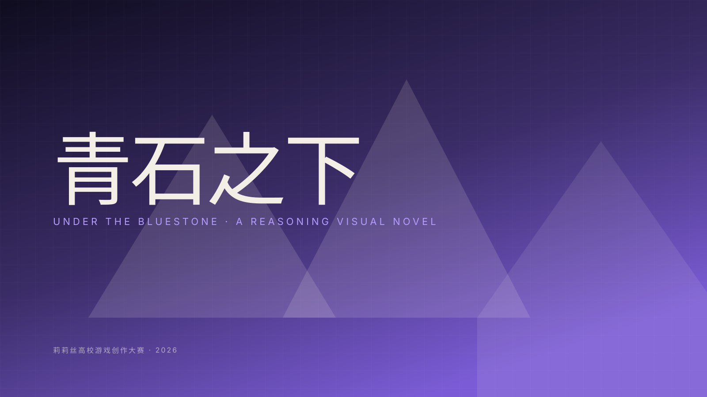

- 时间
- 2026.04
- 角色
- 剧情架构 / 程序实现
- 团队
- 三人（1 文案 · 1 美术 · 我）
- 主办
- 莉莉丝高校游戏创作大赛
- 交付
- Mac / Windows 可执行软件包 · GitHub Pages 网页版
- 技术
- Web 文本 / Electron 打包 / Git

背景 / 问题
莉莉丝高校游戏创作大赛面向全国高校征集原创游戏作品。我们想做一款围绕校园霸凌议题的推理文字游戏 —— 让玩家在文本推进中体会「沉默的旁观者」如何被卷入，从而引发一些共情和反思。
题材相对沉重，我们希望用一种克制的叙事节奏呈现：不能煽情，不能说教；让玩家在日常对话里慢慢感觉哪里不对。
我的工作
- 在文本结构上拆解「主线 + 多分支」的剧情图，用节点文件记录每一个选项与触发条件，便于美术与文案并行维护。
- 设计「笔记本系统」：玩家可收集线索、记录可疑人物和动机，作为推理工具直接作为难度梯度 —— 线索丰富时推理自动变易，符合「边玩边整理」的体验。
- 负责前后端程序整体落地：界面、状态机、本地存档、窗口适配。在交付前完成 Mac / Windows 双平台可执行包。
- 基于 GitHub Pages 完成网页版部署，方便评委在线查看。
关键设计与技术
- 节点式的剧情脚本：每个节点带 id、文本、选项和触发副作用，方便策划维护。
- 状态机驱动 UI：当前节点 → 选项 → 跳转下一个节点；笔记本系统在玩家标记和读取线索时触发不同的剧情路径。
- 本地存档使用 localStorage，Mac / Windows 通过 Electron 打包，节省学习成本。
- 版本管理使用 GitHub，PR + Issue 跟踪剧情节点。
- 通过 VS Code + AI 协作提升开发速度，主要样式与状态机代码单人即可维护。
成果
- 完成可在线试玩版本与双端可执行包，按时提交参赛。
- 剧情节点共 60+，笔记本系统两条难度梯度。
- 作为参赛作品留档，沉淀了一套「轻量文字游戏」的可复用开发模板。
去试玩一下
浏览器里就能玩；最好用桌面端，笔记本系统的交互更顺手。也可以先看 小红书上的游戏 PV。